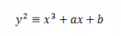

Eliptičke krivulje u kriptografiji
Temu rezervirao: Marko Kos
Sadržaj |
Uvod
Danas u gotovo svim dijelovima računalnog svijeta susrećemo kriptografiju. Pošto količina podataka koja se šalje preko Interneta strelovito raste iz godine u godinu te se je sve teže zaštititi od brojnih napadača, potrebno je konstantno razvijati i proširivati postojeće metode kriptografije. Pri tome valja voditi računa o snažnoj zaštiti informacija kao i o brzini postupka enkripcije, odnosno dekripcije. U ovom radu biti će opisane osnove metode kriptiranja podataka koje se temelje na eliptičkim krivuljama (engl. ECC - Eliptic Curve Cryptography). Diskretni logaritamski problem eliptičke krivulje predstavili su 1985. godine kriptografi Neal Koblitz iz IBM-a i Victor Miller s University of Washington. [1] Na bazi tog logaritamskog problema nastao je ECDSA (Eliptic Curve Digital Signature Algorithm), algoritam koji se koristi za digitalni potpis, a zasnovan je na eliptičkim krivuljama. Taj algoritam razvijen je kao alternativa RSA algoritmu, a njegove prednosti nad RSA su kraći ključevi te brže generiranje ključeva. Još jedna važna stvar kod primjene algoritama koji su zasnovani na eliptičkim krivuljama jest činjenica da oni u svom radu više opterećuju poslužitelj nego klijenta. U nastavku rada biti će opisane osnove algoritama baziranih na eliptičkim krivuljama, pogledati ćemo moguće primjene, kao i neke druge specifičnosti.
Eliptičke krivulje
Općenito o eliptičkim krivuljama
Za promatranje ćemo uzeti krivulju iz sustava konačnih polja primarnih brojeva (Fp) jer je jednostavnija za objasniti od polinomne krivulje. Ključno svojstvo eliptičke krivulje koje ju čini prikladnom za upotrebu u kriptografiji jest matematičko svojstvo, koje kaže da ako se odaberu dvije različite točke na krivulji, tada pravac koji ih spaja presijeca krivulju u trećoj točki. Ako tu točku reflektiramo na x-os dobivamo još jednu točku. Pod uvjetom da su poznate točke P i Q, moguće je naći točku refleksije koja je na slici označena kao P+Q. Upravo ta točka zadovoljava matematička svojstva koja se pojavljuju uz cijele brojeve, pod uvjetom da je definirana točka beskonačnosti. Ta točka je u slučaju cijelih brojeva 0. [1]
{kind=link}
Matematička analiza
{kind=link}
Problem diskretnog algoritma
{kind=link}
ElGamalov kriptosustav
{kind=link}
{kind=link}
Tako zamišljeni sustav se nakon toga može modificirati da se umjesto prethodno navedene grupe koristi grupa eliptičke krivulje nad konačnim poljem. Kada se je koncept ElGamalovog kriptosustava preslikao na krivulje došlo se je do zaključka da to ima određene nedostatke. Neki od osnovnih nedostaka su: [3]
- Prije šifriranja se elementi otvorenog teksta moraju prevesti u točke na eliptičkoj krivulji -> ne postoji odgovarajući deterministički algoritam za taj postupak
- Poruka se šifriranjem čak učetverostruči -> umjesto jednog cijelog broja dobivamo uređeni par točaka eliptičke krivulje.
Zbog tih nedostataka predložene su i druge varijante kriptosustava baziranih na eliptičkim krivuljama. U nastavku će biti riječi o poboljšanom kriptosustavu baziranom na eliptičkim krivuljama.
Menezes-Vanstoneov kriptosustav eliptičkih krivulja
{kind=link}
Primjena eliptičkih krivulja u drugim sustavima
- Demytkov kriptosustav - 1993. godina
- Sustav temeljen na eliptičkim krivuljama analogan RSA algoritmu
- Temelji se na traženju brojeva p i q, n=pq pri čemu su p i q veliki prosti brojevi
- KMOV kriptosustav - 1991. godina (Koyama, Maurer i Vanstone)
- n nije prost broj
- Shema kod koje postoje određena ograničenja vezana za brojeve p i q (n=pq)
- Kuwokado - Koyama kriptosustav
- Odabrati proste brojeve p i q tako da je faktorizacija od n (n=pq) nemoguća
- Ovisno o brojevima p i q računaju se ostali parametri sustava
- ECDSA algoritam
- Metoda za izračun digitalnog potpisa koja koristi eliptičke krivulje
- Prihvaćena kao ISO standard 1998. godine, 1999. godine kao ANSI standard, a 2000. godine kao NIST i IEEE standard
- OFF shema digitalnog potpisa
- Predstavljena 1992. godine (Okamoto, Fujioka i Fujisaki)
- Eliptičke krivulje nad Zn, gdje je n=(p^2)q, a brojevi p i q su prosti
Razmjena poruka koristeći ECC kriptiranje
{kind=link}
Sigurnost kriptosustava eliptičkih krivulja
U sljedećoj tablici prikazane su veličine ključeva različitih algoritama u bitovima koje pružaju jednaku razinu sigurnosti prilikom kriptiranja.[4]
| Simetrični algoritmi | DSA/RSA/Diffie-Hellman | Eliptičke krivulje |
|---|---|---|
| 80 | 1024 | 160 |
| 112 | 2048 | 224 |
| 128 | 3072 | 256 |
| 192 | 7680 | 384 |
| 256 | 15360 | 521 |
Još jedna prednost algoritama eliptičnih krivulja jest ta što su manje računski zahtjevni od spomenutih algoritama, ali imaju složenije operacije po bitu ključa. [5]
Neki od nedostataka algoritama zasnovanih na eliptičkim krivuljama su:
- Prava kompleksnost diskretnog logaritamskog problema za eliptičke krivulje nije u potpunosti jasna
- Prilično je teško pronaći ukupni broj točaka na krivulji
- Nekompatibilnost "parnih" i "neparnih" krivulja (kod RSA algoritma su u teoriji sve korisničke implementacije kompatibilne)
- Kanadska tvrtka Certicom Inc posjeduje pravo na preko 300 patenata koji su povezani sa kriptografijom baziranom na eliptičkim krivuljama. [1]
| Algoritam | Generiranje potpisa | Provjera potpisa |
|---|---|---|
| RSA (1024 bit) | 25 ms | < 2 ms |
| ECDSA (160 bit) | 32 ms | 33 ms |
| RSA (2048 bit) | 120 ms | 5 ms |
| ECDSA (216 bit) | 68 ms | 70 ms |
Iz tablice je vidljivo da s povećanjem veličine ključa generiranje potpisa kod ECDSA algoritma postaje mnogo brže u odnosu na RSA algoritam. Isto tako možemo vidjeti da je verifikacija potpisa kod ECDSA mnoga sporija nego kod RSA algoritma. RSA je sporiji kod generiranja iz razloga što računa velike proste brojeve. ECDSA za generiranje ključeva treba stvoriti samo slučajni broj koji postaje korisnikov tajni ključ i provesti operacije kako bi izračunao javni ključ.
Primjeri implementacije ECDSA U Sage-u
{kind=link}
- 1. dio - definiramo sljedeće vrijednosti: p - prosti broj; k - predstavlja slučajno odabrani broj pomoću kojeg će Alice potpisati poruku za Boba; m - predstavlja poruku namijenjenu za Boba; n - broj točaka na eliptičkoj krivulji - krivulja obično ima oblik:  - nakon toga konstruiramo eliptičku krivulju koristeći zadani prosti broj i parametre a i b koji u našem primjeru imaju vrijednosti a = 4, b = 5 - uz pomoć naredbe E.points() ispišemo sve točke koje se nalaze na eliptičkoj krivulji - odabiremo jednu točku na krivulji u našem slučaju to je točka A = (3,0) te izaberemo slučajni broj a iz intervala [1, n-1] - izračunamo B = A * a
{kind=link}
{kind=link}
- 2. dio - na početku smo odabrali slučajni broj k iz intervala [1, n-1] - računamo R = A * k (potrebno je provjeriti r = x mod n --> ako je r = 0 vratiti se na prvi korak u ovom odjeljku - nakon toga računamo kinv na način da se uzme cjelobrojna vrijednost od izraza k^(-1) mod n - u praksi se u ovom dijelu generiranja potpisa koristi hashiranje, no zbog jednostavnosti to ovdje nije napravljeno - koristeći odabrani tajni ključ a (to nije onaj a kod generiranja krivulje da se izbjegnu zabune, iako imaju iste vrijednosti) i kinv izračunaju se parametri c i s
{kind=link}
- 3. dio - kako bi se verificirao potpis najprije se provjeri da li su vrijednosti parametara r i s iz intervala [1, n-1] - računaju se redom izrazi u_1, u_2 i V - potpis za poruku m se prihvaća ukoliko imamo iste vrijednosti parametara V i R - [R = (3: 0 : 1)] = [V = (3 : 0 : 1)] - u ovom slučaju potpis možemo prihvatiti - u praksi se također koristi hashiranje i u ovom dijelu provjere potpisa - izabrani su jednostavni i ilustrativni primjeri kako bi se lakše ušlo u ovo dosta kompleksno područje
{kind=link}
{kind=link}
- Rješenje navedenog primjera možete pogledati na sljedećoj poveznici. ECDSA - Sage - Primjer - Za bolje razumijevanje primjera možete koristiti sljedeću poveznicu. Korištenje eliptičnih krivulja u kriptografiji
Zaključak
Kao što sam već ranije spomenuo kriptografski sustavi bazirani na eliptičkim krivuljama predstavljaju alternativu za RSA algoritam. Najveća prednost i područje primjene gdje su daleko bolji ovakvi sustavi su mali uređaji s ograničenom procesorskom snagom kao i memorijskim prostorom. To je iz razloga što u svom radu takvi sustavi više opterećuju poslužitelj, nego klijenta. Činjenice koje ovakvim sustavima ne idu u prilog su teškoće pri generiranju prikladnih krivulja, spore potvrde potpisa, patentna prava i sl.
Literatura
[1] http://www.cis.hr/www.edicija/LinkedDocuments/CCERT-PUBDOC-2006-11-169.pdf, dostupno 05.01.2016.
[2] http://www.garykessler.net/library/crypto.html#ecc, dostupno 05.01.2016.
[3] http://hrcak.srce.hr/index.php?show=clanak&id_clanak_jezik=14678, dostupno 05.01.2016.
[4] The Case for Elliptic Curve Cryptography, http://www.nsa.gov/ia/industry/crypto_elliptic_curve.cfm, dostupno 05.01.2016.
[5] Thales e-Security: Eliptic Curve Cryptography, 2000.
[6] http://security.foi.hr/wiki/index.php/ECC_kriptografija_(Elipti%C4%8Dne_krivulje), dostupno 05.01.2016.
Korisno
[1] https://koclab.cs.ucsb.edu/teaching/cren/docs/w03/09-ecc.pdf